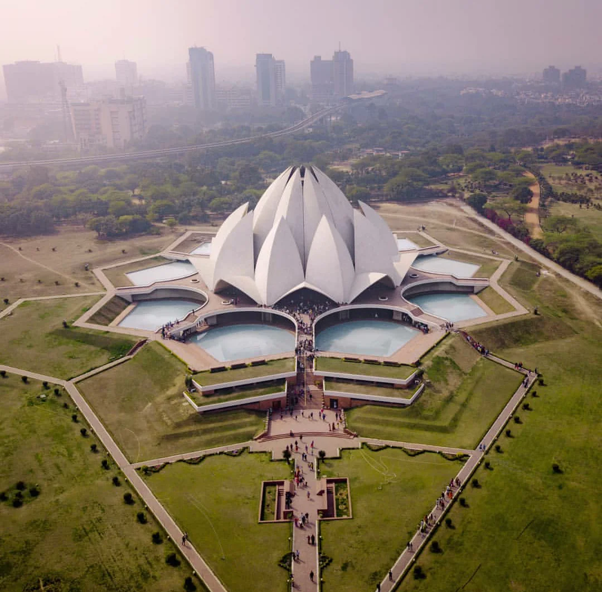

The Lotus Temple, located in New Delhi, India, is a Baháʼí House of Worship that was dedicated in December 1986. Notable for its lotus-like shape, it has become a prominent attraction in the city. Like all Bahá’í Houses of Worship, the Lotus Temple is open to all, regardless of religion or any other qualification. The building is composed of 27 free-standing marble-clad "petals" arranged in clusters of three to form nine sides, with nine doors opening onto a central hall with a height of slightly over 34 meters and a capacity of 1,300 people. The Lotus Temple has won numerous architectural awards and has been featured in many newspaper and magazine articles.
The architect of the Lotus Temple was an Iranian, Fariborz Sahba who now lives in La Jolla, California, after spending some years in Canada. He was approached in 1976 to design the Lotus Temple and later oversaw its construction. The structural design was undertaken by the UK firm Flint and Neill over the course of 18 months, and the construction was done by ECC Construction Group of Larsen & Toubro Limited at a cost of $10.56 million. The major part of the funds needed to buy this land was donated by Ardishír Rustampúr of Hyderabad, Sindh (Pakistan), whose will dictated that his entire life savings would go toward the building of the temple. [page needed] A portion of the construction budget was saved and used to build a greenhouse to study indigenous plants and flowers that would be appropriate for use on the site.
Structure
 The design for the House of Worship in New Delhi is inspired by the lotus flower and is composed of 27 free-standing marble-clad "petals" arranged in clusters of three to form nine sides. The temple's shape has symbolic and inter-religious significance because the lotus is often associated with purity, sacredness, spirituality, and knowledge. It has a spiritual significance in India. The nine doors of the Lotus Temple open onto a central hall 34.3 meters tall that can seat 1,300 people and hold up to 2,500 people. The temple has a diameter of 70 m. The surface of the House of Worship is made of white marble from Penteli mountain in Greece, the same marble used in the construction of many ancient monuments (including the Parthenon) and other Baháʼí buildings. Along with its nine surrounding ponds and gardens, the Lotus Temple property comprises 26 acres (105,000 m2; 10.5 ha). An educational centre beside the temple was established in 2017.
The design for the House of Worship in New Delhi is inspired by the lotus flower and is composed of 27 free-standing marble-clad "petals" arranged in clusters of three to form nine sides. The temple's shape has symbolic and inter-religious significance because the lotus is often associated with purity, sacredness, spirituality, and knowledge. It has a spiritual significance in India. The nine doors of the Lotus Temple open onto a central hall 34.3 meters tall that can seat 1,300 people and hold up to 2,500 people. The temple has a diameter of 70 m. The surface of the House of Worship is made of white marble from Penteli mountain in Greece, the same marble used in the construction of many ancient monuments (including the Parthenon) and other Baháʼí buildings. Along with its nine surrounding ponds and gardens, the Lotus Temple property comprises 26 acres (105,000 m2; 10.5 ha). An educational centre beside the temple was established in 2017.
The Lotus Temple is situated near the Kalkaji Mandir metro station about 500 meters away. It is in the village of Bahapur in New Delhi, National Capital Territory of Delhi, near Nehru Place Read more...